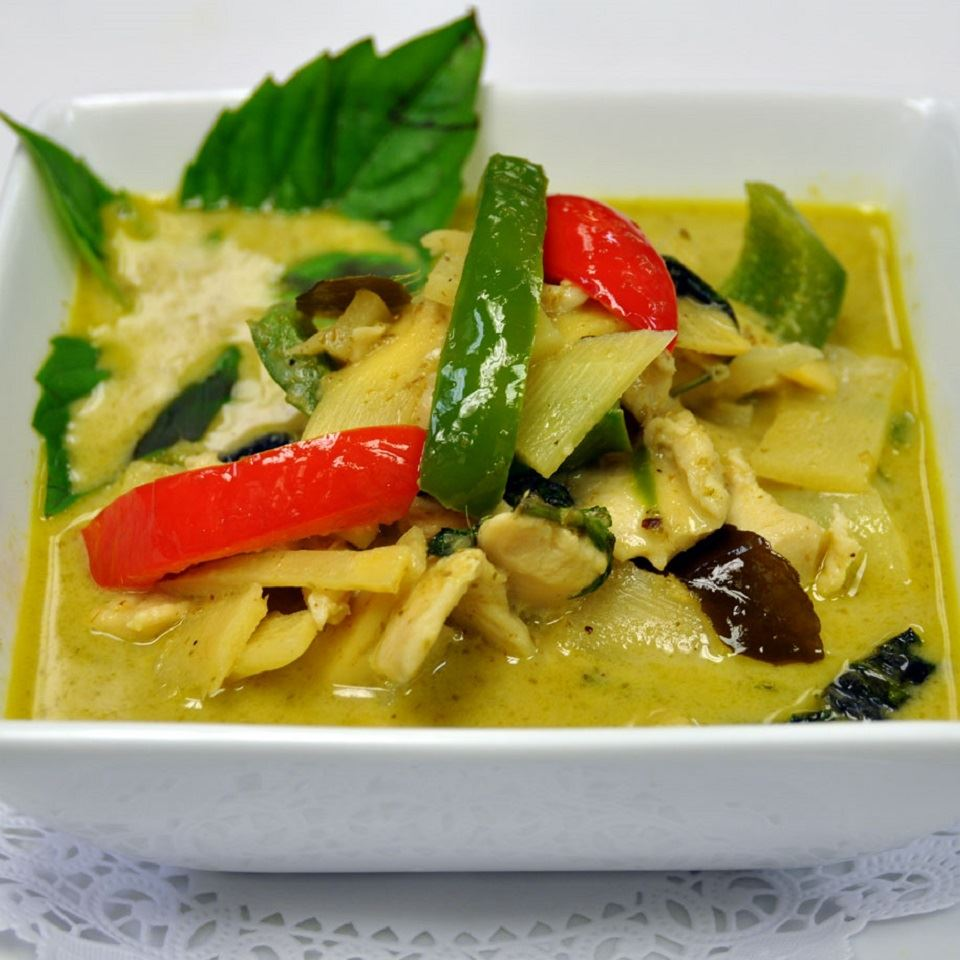

Green curry with Chicken

Local thai yummy food, Spicy Soft and Smooth!
Green spicies melts in coconut milk with chicken such a good for lunch or dinner
This is a green curry recipe I've cobbled together over the years. The vegetables aren't completely traditional,
but they give the whole thing a good texture and variety.
Often asked for in my household, hopefully it'll become a favorite in yours. Serve over rice.
Ingredients
- 2 tablespoons peanut oil
- ¼ cup Thai green curry paste
- 3 cloves garlic, minced
- 1 (1/4 inch thick) slice ginger, finely grated
- 2 boneless, skinless chicken breasts, thinly sliced
- 1 (15 ounce) can baby corn pieces, drained
- 1 (8 ounce) can bamboo shoots, drained
- 2 (13.5 ounce) cans coconut milk
- 2 tablespoons fish sauce
- 2 tablespoons palm sugar
- 6 kaffir lime leaves
- 1 red bell pepper, cut into thin strips
- 1 orange bell pepper, cut into thin strips
- ¼ cup thinly sliced Thai basil, or more to taste
Steps
-
Heat oil in a wok until it starts to shimmer. Add curry paste, garlic, and ginger; stir together and fry until fragrant, 2 to 3 minutes.
Add chicken breast slices, stirring until coated. Cook until just slightly pink in the center, 3 to 5 minutes.
-
While chicken is cooking, place baby corn and bamboo shots in a small saucepan, cover with water, and place over high heat. Bring to a boil.
Drain then cover with water again.
-
Pour coconut milk into the wok. Bring to a slow simmer, stirring occasionally, about 5 minutes. Drain corn and bamboo shoots and add in.
Stir in fish sauce, palm sugar, and kaffir lime leaves. Bring back up to a simmer and cook for 5 minutes.
Stir in bell pepper strips and cook until crisp-tender, about 3 minutes.
-
Remove curry from heat and stir in Thai basil.
Home page